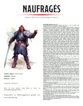

Scénarios
Des aventures en français pour Dungeons & Dragons 5 à télécharger gratuitement. Notez que les lieux cités dans ces scénarios sont indiqués sur la carte interactive de Laelith et la carte interactive des provinces.
À la chasse aux gobs
Niveau : 1
Dernière édition : 19/04/20 (lien QR vers le bestiaire)
Nbre de pages : 6
Liens : À la chasse aux Gobs ; Bestiaire
Campagne : première aventure
Les personnages doivent aller délivrer la fille du chef de leur village, capturée par une tribu de gobelins.
L'Oeil de Gruumsh
Niveau : 1
Dernière édition : 25/05/20 (lien QR vers le bestiaire)
Nbre de pages : 7
Liens : L'Oeil de Gruumsh ; Bestiaire
Campagne : après « À la chasse aux Gobs »
Les personnages doivent ramener une relique à un chaman orc afin de sauver l'un des leurs.
La tombe des rois serpents
Niveau : 1 (5 PJ)
Dernière édition : 18/03/22 (corrections)
Nbre de pages : 11
Liens : La tombe des rois serpents ; Bestiaire
Les personnages doivent explorer un tombeau abandonné et en ramener le butin.
La secte du Crâne
Niveau : 2
Dernière édition : 19/04/20 (lien QR vers le bestiaire)
Nbre de pages : 5
Liens : La secte du Crâne ; Bestiaire
Campagne : après « L'Oeil de Gruumsh »
Les personnages doivent enquêter sur la disparition du fils d'un marchand de Laelith.
Duel au pinceau
 Niveau : 2
Niveau : 2
Dernière édition : 27/07/20 (ajustement des PX)
Nbre de pages : 6
Liens : Duel au pinceau ; Bestiaire
Campagne : aventure bonus pour obtenir des PX
Les personnages doivent retrouver un peintre talentueux qui a disparu à Laelith.
Le collier de Zark
Niveau : 2
Dernière édition : 12/10/20
Nbre de pages : 9
Liens : Le collier de Zark ; Bestiaire
Campagne : aventure bonus pour obtenir des PX
Les personnages doivent retrouver un chien et son mystérieux collier dans Laelith.
Le masque utruz
Niveau : 3
Dernière édition : 25/05/20 (lien QR vers le bestiaire)
Nbre de pages : 8
Liens : Le masque utruz ; Bestiaire
Campagne : après « La secte du Crâne »
Les personnages doivent mettre la main sur le trésor des utruz.
L'auberge du Sanglier Gris
Niveau : 3
Dernière édition : 25/05/20 (lien QR vers le bestiaire)
Nbre de pages : 9
Liens : L'auberge du Sanglier Gris ; Bestiaire
Campagne : après « Le masque utruz »
Les personnages doivent s'évader de la cave d'une auberge.
Douze fontaines
Niveau : 3
Dernière édition : 14/07/21 (changement d'adresse pour la Gazette)
Nbre de pages : 7
Liens : Douze fontaines ; Bestiaire
Campagne : aventure bonus pour obtenir des PX
Les personnages doivent enquêter sur l'assassinat d'un journaliste de la Gazette de Laelith.
Le nom de la foi
Niveau : 3
Dernière édition : 18/07/20
Nbre de pages : 7
Liens : Le nom de la foi ; Bestiaire
Campagne : aventure bonus pour obtenir des PX
Les personnages doivent enquêter sur une série de meurtres dans un hospice isolé en plein hiver.
Le rachat
Niveau : 4
Dernière édition : 25/05/20 (corrections)
Nbre de pages : 6
Campagne : après « L'auberge du Sanglier Gris »
Les personnages doivent rejoindre une tribu du désert afin de demander pardon pour l'un de ses membres.
Les ruffians d'Olizya
Niveau : 4
Dernière édition : 19/04/20 (lien QR vers le bestiaire)
Nbre de pages : 5
Liens : Les ruffians d'Olizya ; Bestiaire
Campagne : après « Le rachat »
Les personnages doivent escorter la fille d'un notable jusqu'à Hilminia.
Pour un diamant
Niveau : 5
Dernière édition : 25/05/20 (lien QR vers le bestiaire)
Nbre de pages : 7
Liens : Pour un diamant ; Bestiaire
Campagne : après « Les ruffians d'Olizya »
Les personnages doivent récupérer un diamant pour sortir un halfelin d'un mauvais pas.
Basse Tour
 Niveau : 5
Niveau : 5
Dernière édition : 27/07/20 (ajustement des PX)
Nbre de pages : 7
Liens : Basse Tour ; Bestiaire
Campagne : après « Pour un diamant »
Les personnages doivent délivrer le fantôme d'un nain condamné à errer dans une ancienne mine.
Le message
Niveau : 5
Dernière édition : 06/04/21 (corrections)
Nbre de pages : 8
Liens : Le message ; Bestiaire
Campagne : après « Basse Tour »
Les personnages doivent porter un mystérieux message à une jeune fille à quelques jours de son mariage.
L'héritage
Niveau : 6
Dernière édition : 18/04/21 (corrections)
Nbre de pages : 9
Liens : L'héritage ; Bestiaire
Campagne : après « Le message »
Les personnages doivent faire s'évader un individu d'un bagne situé sur une île.
Le sceptre de Baine
Niveau : 6
Dernière édition : 25/05/20 (lien QR vers le bestiaire)
Nbre de pages : 7
Liens : Le sceptre de Baine ; Bestiaire
Campagne : après « L'héritage »
Les personnages doivent traquer un meurtrier dans la nature.
Quitte ou double
Niveau : 6
Dernière édition : 27/07/20 (ajustement des PX)
Nbre de pages : 7
Liens : Quitte ou double ; Bestiaire
Campagne : après « Le sceptre de Baine »
Les personnages doivent enquêter sur la chance aux jeux insolente d'un vieux gnome.
La nuit de l'Empereur-Démon
Niveau : 7
Dernière édition : 19/04/20 (lien QR vers le bestiaire)
Nbre de pages : 8
Liens : La nuit de l'Empereur-Démon ; Bestiaire
Campagne : après « Quitte ou double »
Les personnages doivent enquêter sur la disparition du propriétaire d'un cirque à Laelith.
Naufragés
Niveau : 7
Dernière édition : 07/10/20 (corrections)
Nbre de pages : 8
Campagne : après « La nuit de l'Empereur-Démon »
Les personnages doivent retrouver le corps d'un paladin et le sanctifier, après s'être échoués sur une île.
Fort Roanoke
Niveau : 7
Dernière édition : 08/05/20
Nbre de pages : 10
Liens : Fort Roanoke ; Bestiaire
Campagne : après « Naufragés »
Les personnages doivent retrouver un groupe de jeunes aventuriers partis à la recherche d'une ancienne cité dans les montagnes.
Le retour de l'Empereur-Démon
Niveau : 8
Dernière édition : 19/04/20 (lien QR vers le bestiaire)
Nbre de pages : 8
Liens : Le retour de l'Empereur-Démon ; Bestiaire
Campagne : après « Fort Roanoke »
Les personnages doivent retrouver un démon et explorer un temple oublié.
L'armée verte
Niveau : 8
Dernière édition : 14/04/21
Nbre de pages : 6
Liens : L'armée verte ; Bestiaire
Campagne : après « Le retour de l'Empereur-Démon »
Les personnages doivent vérifier ce qu'il se passe dans un village au centre d'un grand projet de la baronnie gnome de Kaoca.
Le mariage de l'Empereur-Démon
Niveau : 9
Dernière édition : 27/07/20 (ajustement des PX)
Nbre de pages : 8
Liens : Le mariage de l'Empereur-Démon ; Bestiaire
Campagne : quelques aventures après « Le retour de l'Empereur-Démon »
Les personnages doivent enquêter sur la disparition d'un chef d'orchestre renommé à Laelith.
Adventurers League
Les aventures suivantes sont basées sur des scénarios de l'Adventurers League et suivent les storylines officielles de D&D 5.
Défis à Phlan
Niveau : 1
Dernière édition : 29/02/20 (mise en page et lien QR vers le bestiaire)
Nbre de pages : 16
Liens : Défis à Phlan ; Bestiaire
5 petites aventures avec pour thème central les dragons (DDEX01-01) et entrer dans l'ambiance de la storyline Tyranny of Dragons.
Harcelés à Montéloy
Niveau : 1
Dernière édition : 07/10/20 (corrections)
Nbre de pages : 17
Liens : Harcelés à Montéloy ; Bestiaire
5 petites aventures avec pour thème central les démons (DDEX03-01) et entrer dans l'ambiance de la storyline Rage of Demons.
Trésors aux Pics Gris
Niveau : 1
Dernière édition : 29/02/20 (mise en page et lien QR vers le bestiaire)
Nbre de pages : 14
Liens : Trésors aux Pics Gris ; Bestiaire
5 petites aventures avec pour thème central les géants (DDAL05-01) et entrer dans l'ambiance de la storyline Storm King's Thunder.
Menaces sur Port Nyanzaru
Niveau : 1
Dernière édition : 29/02/20 (lien QR vers le bestiaire)
Nbre de pages : 17
Liens : Menaces sur Port Nyanzaru ; Bestiaire
5 petites aventures avec pour thème central Chult (DDAL07-01) et entrer dans l'ambiance de la storyline Tomb of Annihilation.
Fuir l'Elturgard
Niveau : 1
Dernière édition : 29/02/20
Nbre de pages : 10
Liens : Fuir l'Elturgard ; Bestiaire
4 petites aventures avec pour thème central les diables (DDAL09-01) et entrer dans l'ambiance de la storyline The Descent.
Quelque chose de perdu
Niveau : 0
Dernière édition : 15/10/21
Nbre de pages : 12
Liens : Quelque chose de perdu ; Bestiaire
Une aventure qui sert de prélude à la storyline The Wild Beyond the Witchlight et propose de jouer les personnages quand ils étaient enfants, avant qu'ils n'entrent dans la grande aventure à l'âge adulte. Sans combat, l'ambiance est clairement différente. Une aventure qui pourrait servir à initier de jeunes joueurs enfants à D&D 5.